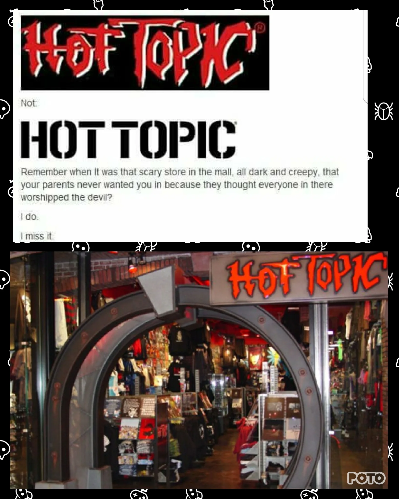

Gabrielle Teachey
Battle jackets or vests became very popular in the heavy metal, thrash metal, and the punk rock community in between the 1970s and 1980s. Battle vests/jackets originated in the U.S. Air Corps and were later adopted in heavy metal subcultures and biker clubs. In the biking community, these vests and jackets are known as cuts. The difference between cuts and battle jackets is that cuts are used to distinguish which biker club you belong to. The back of a cut usually has the logo of the club with its name and state they're in. The front of the cut, on the opposite of the chest pocket is a patch that has a bikers club name or nickname on it. Whereas battle vests and battle jackets are usually pieces of denim or leather that consists of patches that are sewn onto the article of clothing that has the logos of a person's favorite band. Many people that fall under metal subcultures even go as far as cutting up a band t-shirt and sewing it onto the back of the jacket as well as adding studs or spikes around the perimeter of the jacket for extra design. Battle jackets and vests are very important in the heavy metal community due to people being able to express themselves through a piece of clothing.
| Size of battle vest | Amount of patches |
|---|---|
| Small | 25 |
| Medium | 35 |
| Large | 45 |
Gabrielle Teachey
Growing up Hot Topic was a store my mom used to hate taking me in because of its hardcore music and dark aesthetic. Many millennials, or at least the ones I know, were always scared of HotTopic, calling the store itself and the people who shopped there demonic and weird. Growing up and being a kid who grew a love for heavy metal, my mom viewed me as one of those weird kids. Instead of going into the store with me, she would send me in with her card and let me buy what I wanted. If I remember correctly, it took about a year for my mom to gather the courage to come inside of Hot Topic with me. In comparison to the early and mid 2000s era of Hot Topic, there have been some drastic changes. One being there is now a lot of pink and Hello Kitty, along with other animated cartoon characters that are being sold in that store. What used to be a store filled with dark clothing that catered towards the punk, grunge, goth, and metal community, now caters toward the anime community. Although there is no problem with that, the old Hot Topic is heavily missed.
